顺时针 · 乌市进→伊宁出
13天 · 机票 ¥5350/人（¥2560+¥2790）
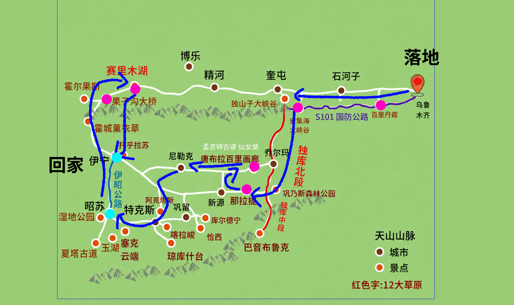
1423
总公里
22h
总驾驶
270
最累km
0天
超300km
D1 · 7/2 周三
上海虹桥 ✈️ 乌鲁木齐，休整
✈️ 落地
D2 · 7/3 周四
🏙️ 乌鲁木齐全天（大巴扎、二道桥、国际大巴扎）
0km · 纯休息
D3 · 7/4 周五
乌市 → 🔴S101百里丹霞 → 🏜️安集海 → 奎屯
248km / 3h
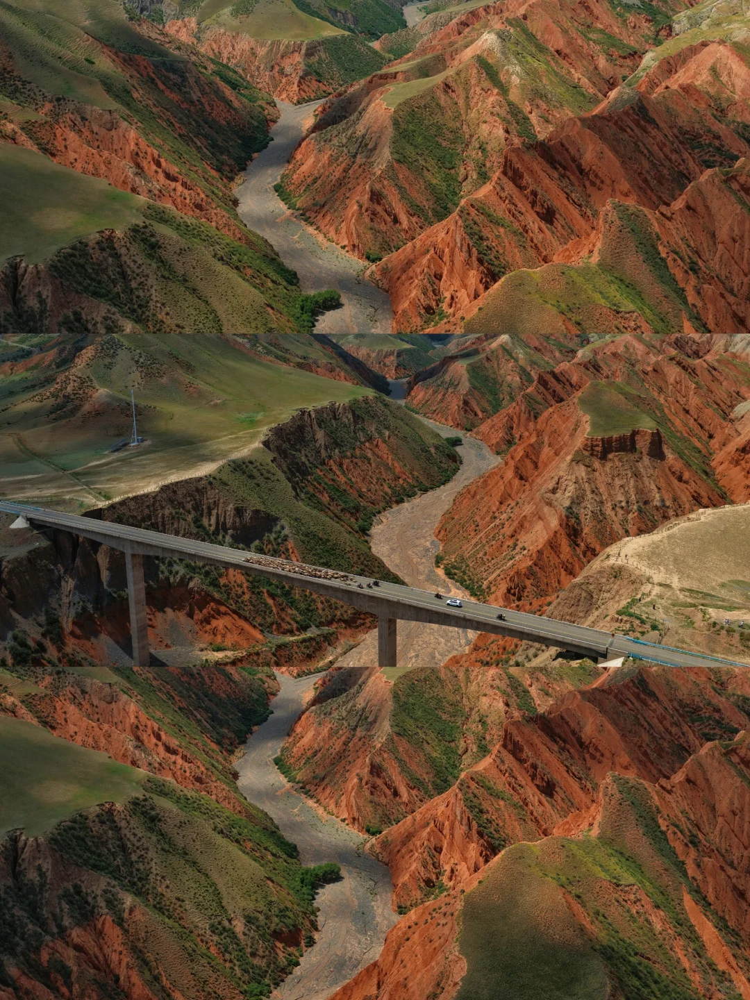
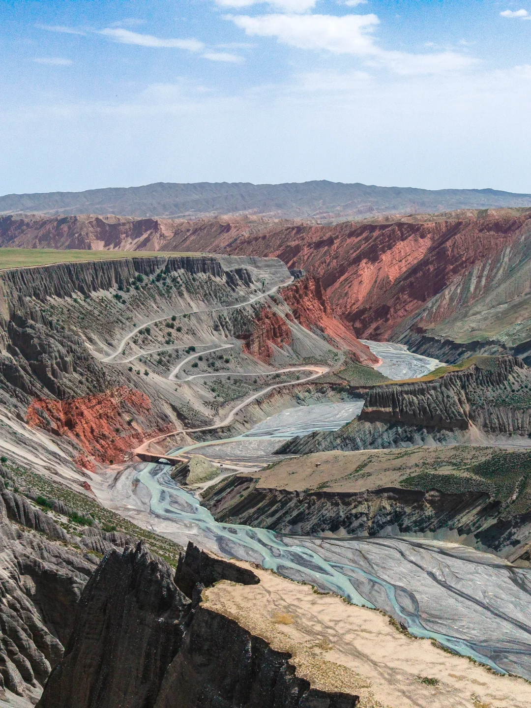
D4 · 7/5 周六
奎屯 → 🛣️独库公路（北段+中段）→ 🌿那拉提
270km / 5.5h
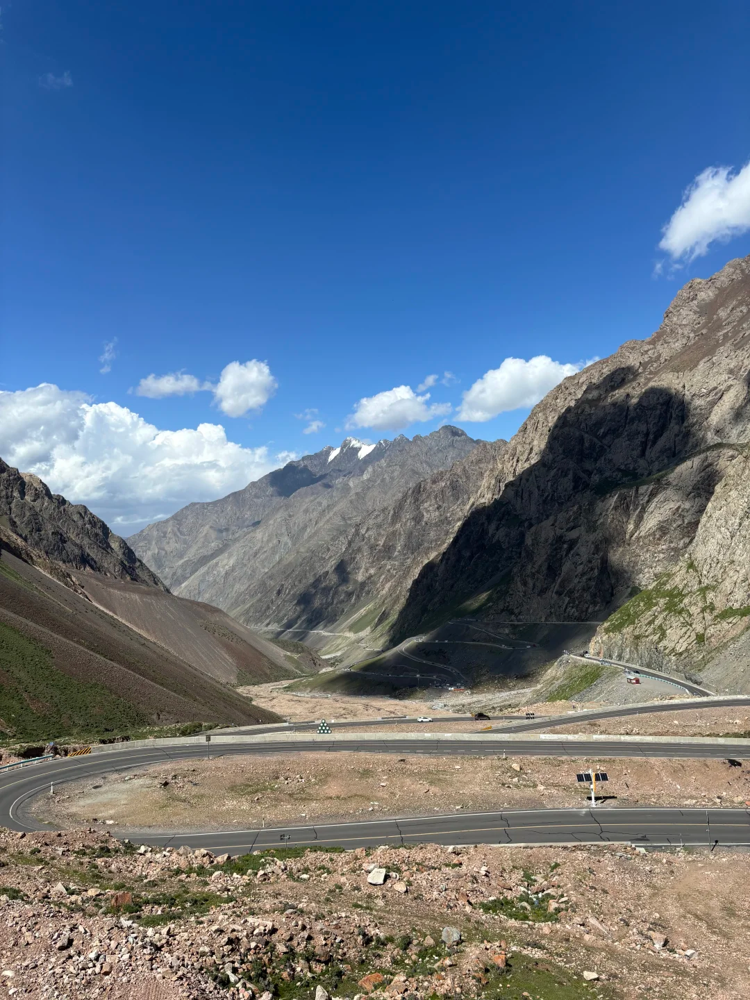
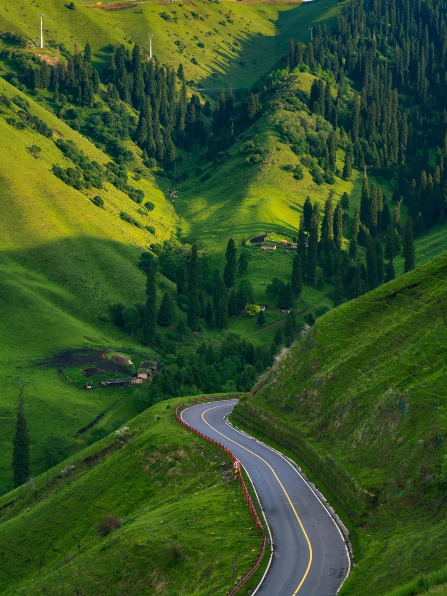
D5 · 7/6 周日
🌿 那拉提全天 → 晚上到唐布拉营地
102km / 1.8h
D6 · 7/7 周一
🏞️ 百里画廊 + 唐布拉 + 🍯蜂蜜（孟克特待定）
~50km · 走走停停
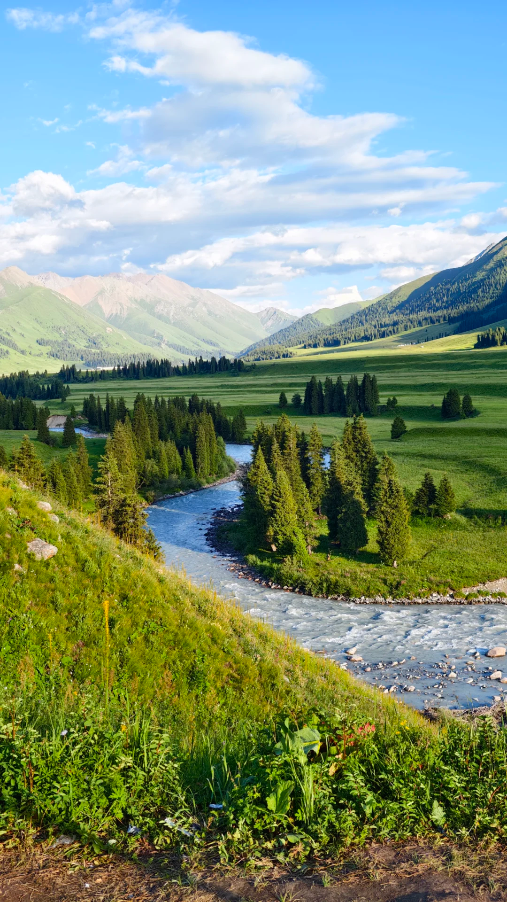
D7 · 7/8 周二
唐布拉 → 76团 🏠 婆婆的故乡
236km / 3.7h
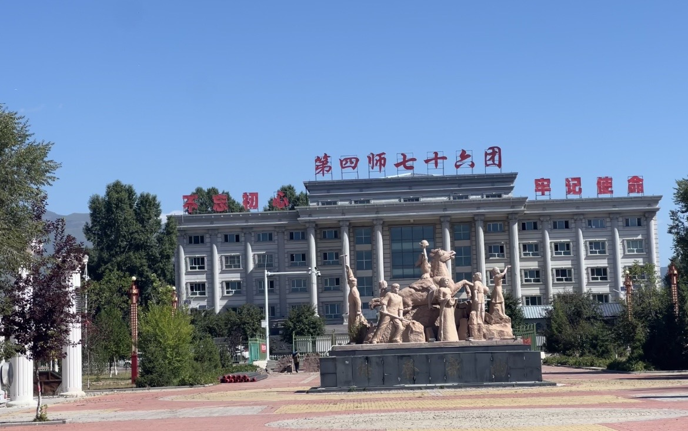
D8 · 7/9 周三
🌻 76团全天 🏠
0km · 纯休息
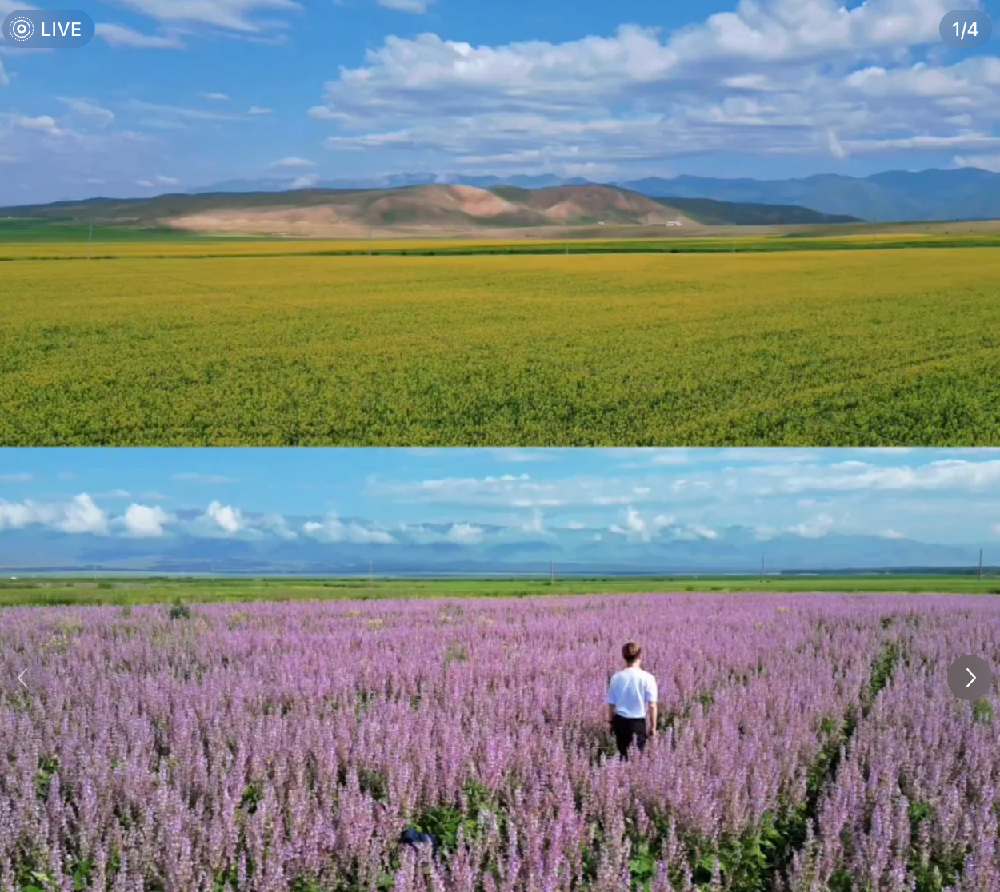
D9 · 7/10 周四
76团 → 伊昭公路 → 🏙️伊宁
200km / 3.5h
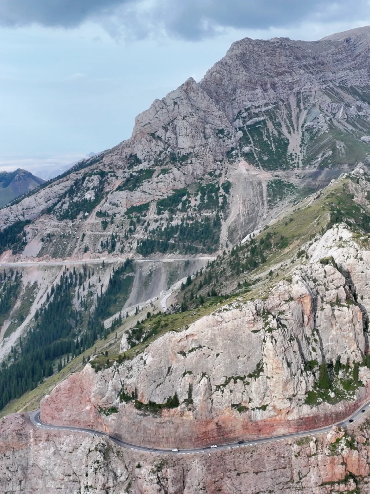
D10 · 7/11 周五
伊宁 → 🌉果子沟 → 💎赛里木湖营地
160km / 2h
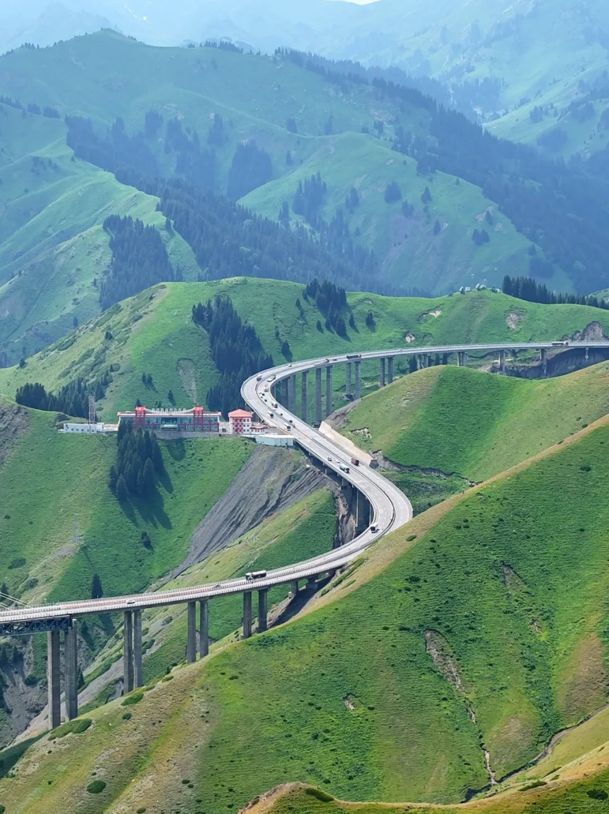
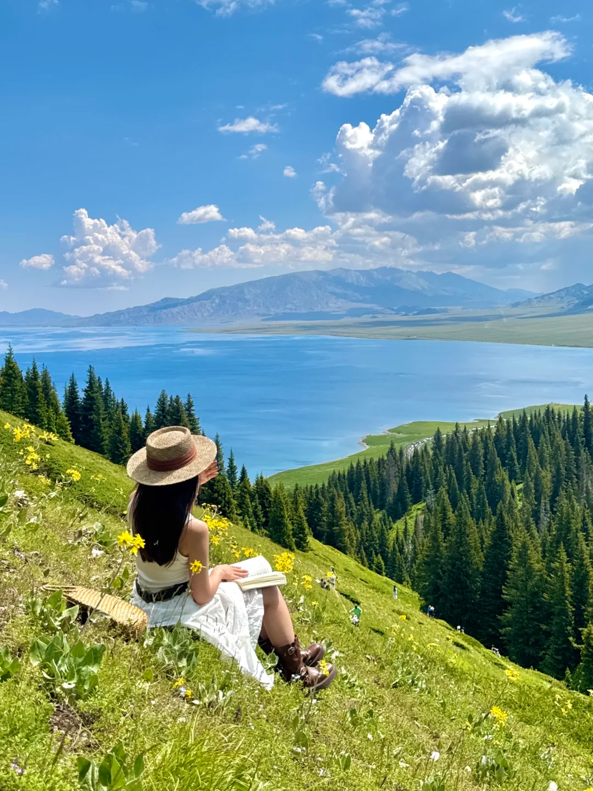
D11 · 7/12 周六
💎 赛里木湖全天（环湖+日出）→ 伊宁
157km / 2.4h
D12 · 7/13 周日
🏙️ 伊宁全天（喀赞其+六星街）
0km · 纯休息
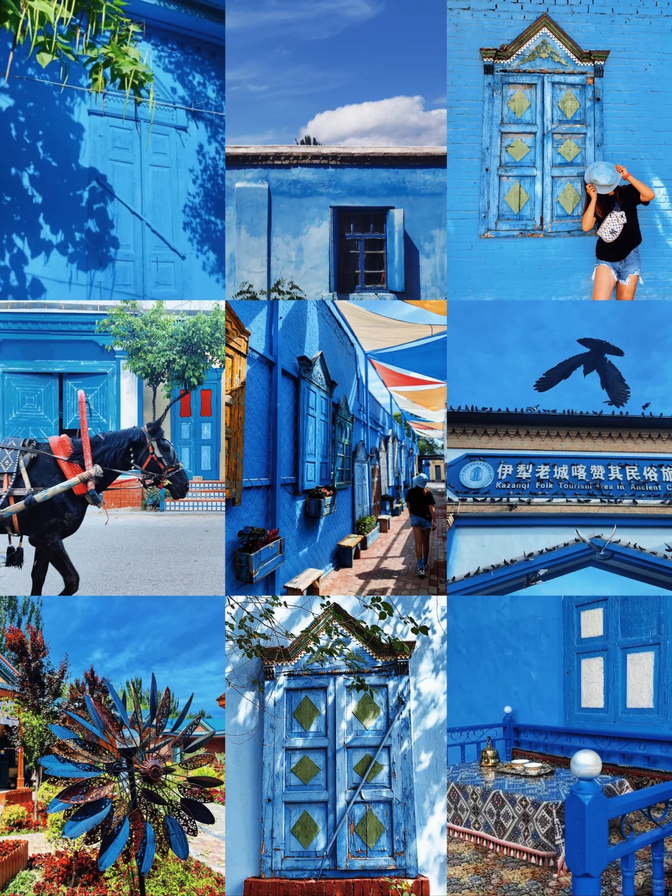
D13 · 7/14 周一
伊宁16:40 ✈️ 浦东22:05
✈️ 回家
📈 每日驾驶强度
🐣 为什么选顺时针？
✅ 后程越走越轻松（后4天：157+0+✈️）
✅ 独库公路北段+中段270km完整体验
✅ 没有任何一天超300km
✅ 总里程1423km
✅ 适合带老人小孩的舒适节奏
📊 海拔剖面图
🚗 车辆要求
- 7座及以下（独库强制）
- SUV最佳，底盘要高（S101+伊昭）
- 动力要足（爬3000m+达坂）
- 不建议纯电车（充电桩间隔超200km）
- 必备：防滑链、充气泵、拖车绳、应急电源
🚗 租车推荐
4大1小 · 13天 · 独库+伊昭 · 乌市取车→伊宁还车
⭐ 首选：理想 L8（增程式 · 6座）
- 增程式四驱，没电烧油，零续航焦虑
- 6座独立座椅+空气悬挂，老人小孩长途超舒服
- 冰箱彩电大沙发，车内堪比移动客厅
- 油箱52L，满油满电综合续航~1000km
- 加95号油，亏电油耗~8-9L/百公里
- 旺季日租 ¥700-1000 · 13天约 ¥12,000（含保险）
- 油费约 ¥1,350（95号 ¥9.11/升）
- 平台推荐：悟空租车、携程租车、本地车行
🥈 次选：丰田 皇冠陆放（混动 · 7座）
- 就是新汉兰达！丰田在新疆满大街，修车最方便
- 2.5L混动省油，四驱版伊昭下雨也安心
- 7座第三排放倒=超大后备箱，行李随便装
- 加92号油，百公里油耗仅~6L
- 旺季日租 ¥600-800 · 13天约 ¥10,000（含保险）
- 油费约 ¥1,170（92号 ¥8.52/升）
- 平台推荐：一嗨租车、携程租车
💰 省钱：大众 探岳 2.0T（5座）
- 空间够大，2.0T动力翻达坂随叫随到
- 底盘扎实，高速稳当
- 旺季日租 ¥400-550 · 13天约 ¥7,000（含保险）
- 油费约 ¥1,550（95号）
⚠️ 租车避坑
- 旺季至少提前2-3周预订
- 买全险/尊享保险（~¥100/天），山路免赔省心
- 取车拍全车照片+视频，尤其底盘轮毂
- 确认能走独库+伊昭（部分保险排除非铺装路面）
- 异地还车费约 ¥800-1500（提前确认）
- 别租纯电车！充电桩间隔超200km
👕 穿衣指南
- 伊宁/城镇 28-35°C → 短袖夏装
- 草原 15-25°C → 长袖+薄外套
- 赛里木湖早晚 8-15°C → 抓绒+防风外套
- 达坂 0-10°C → 冲锋衣+抓绒
- 必带：冲锋衣、抓绒、防晒衣、徒步鞋
🎒 必带清单
- 防晒：SPF50+防晒霜、墨镜、遮阳帽
- 高原：便携氧气瓶×2-3、红景天(提前2周吃)、晕车药
- 食物：矿泉水多备、零食干粮、电解质冲剂、保温杯
- 数码：大容量充电宝、车载手机支架
- 其他：现金(76团无信号)、雨伞、湿纸巾、垃圾袋
⚠️ 重点提醒
- 独库限行：每日20:00-次日09:00禁行
- 伊昭公路：下雨/塌方随时封路，备选G218
- 加油：看到油站就加满，山区加油站少
- 不要赶夜路：山区无路灯+牲畜上路
- 76团信号差：提前下载离线地图
- 达坂别久停：翻过就走，低海拔再休息
💰 预算估算（5大1小）
项目明细金额
成人¥5,350×5 + 儿童¥2,675×1
¥29,425
12晚 × ¥300/人 × 4人
¥14,400
7座SUV 13天 + 异地还车
¥11,000
~1500km × 12L/100km × ¥7.8
¥1,400
赛里木湖+那拉提+喀赞其
¥2,025
13天餐饮（早¥30/午¥60/晚¥80）
¥11,900
过路费+停车+零食+药品+杂项
¥2,000
总计
¥72,150
人均（÷4人）
¥18,038